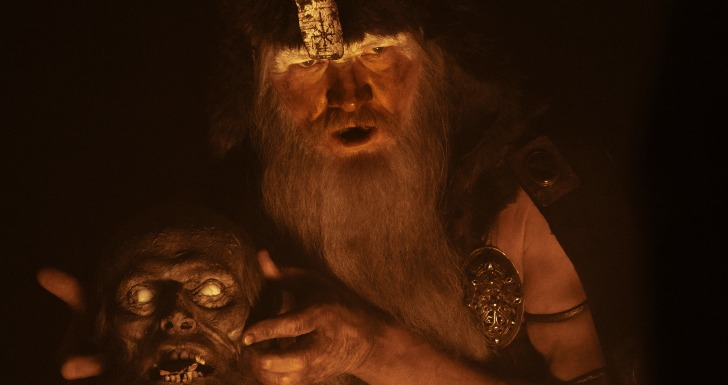
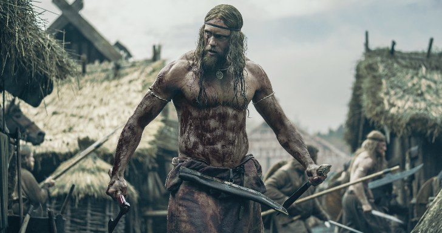
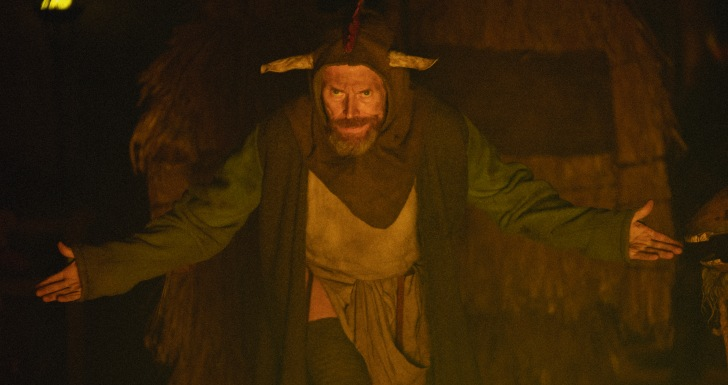
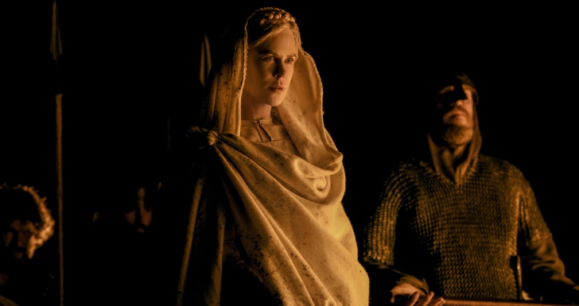

1 A NARRATIVA BASEIA-SE NUM MITO FUNDADO QUE INSPIROU SHAKESPEARE E O REI-LEÃO
A narrativa de “The Northman” é uma de sanguinária vingança, num thriller que recupera um mito fundador da cultura nórdica mas também das lendas que mais tarde viriam a ser apropriadas por Shakespeare e até por narrativas Viking. Falamos do conto do Princípe Amleth, aqui interpretado por Alexander Skarsgård. Este conto, que viria a inspirar a famosa “Tragédia de Hamlet” é na realidade muito anterior ao trabalho do dramaturgo inglês. As origens de Amleth – um mito situado temporalmente no século X, remontam aos escritos do historiador dinamarquês Saxo Grammaticus, que no século XIII escreveu um dos documentos mais importantes da história e fantasia nórdicas – a Gesta Danorum. Eggers e Skarsgård escolheram adaptar (bastante) livremente este texto na sua interpretação da cultura viking no grande ecrã, por se tratar de uma história simples e conhecida de todos, a partir da qual Eggers conseguiria trabalhar os detalhes e a representação da época com exatidão. Na história, Príncipe Amleth (Alexander Skarsgård) deve cumprir a profecia de vingar a morte do seu pai (o Rei Aurvandil, Ethan Hawke) às mãos do seu tio ( Fjölnir, Claes Bang) e salvar a sua mãe (Rainha Gudrún, Nicole Kidman).
2 ÉPICO DE GUERRA HISTORICAMENTE FIDEDIGNO
Em várias entrevistas, Robert Eggers orgulha-se e proclama que o seu “O Homem do Norte” é o mais fiel filme de vikings alguma vez produzido em Hollywood. A equipa do filme construiu os adereços e o guarda-roupa olhando permanentemente para os materiais e preceitos que regiam a cultura viking do século X, fazendo-se acompanhar de uma equipa ampla de historiadores e arqueólogos especializados neste período histórico e nesta civilização. Desta forma, os produtores Skarsgård e Eggers colocaram a fidelidade histórica como um valor central, como é invulgar em grandes produções norte-americanas. Há partes do filme faladas em Nórdico Antigo, há espadas e barcos que respeitam os preceitos da época, há até uma aldeia inteira construída à semelhança daquilo que poderíamos encontrar na Islândia do período do filme. Entre os conselheiros/ consultores contam-se o especialista em arqueologia Neil Price (“The Viking Way”) ou ainda a Académica Johanna Katrin Fridriksdottir (“Valkyrie: The Women of the Viking World”). Quem tem conhecimento na matéria, defende que “The Northman” é quase como “uma aula de cultura viking”, tal foi o cuidado da produção. Todos estes pormenores elevam a longa-metragem bem acima de outros épicos históricos. Onde o filme se torna menos fidedigno é nalguns dos rituais, onde Eggers dá asas à sua imaginação.
3 A VERSÃO FINAL DO FILME FOI ALTERADA DEPOIS DAS AUDIÊNCIAS-TESTE
O estúdio exigiu uma simplificação do ato inicial do filme, bem como a inserção de títulos que permitissem ao público compreender as elipses temporais. Depois da primeira visualização de uma audiência-teste, alguns membros da amostra revelaram confusão em relação ao enredo e sua progressão, o que obrigou a alterações na estrutura dos atos. Robert Eggers defende que, or fim, acabou por “entregar a versão mais divertida do filme, embora tal não seja necessariamente o meu objetivo. Mas simplesmente aconteceu. “ Apesar de gostar da versão final, Eggers falou abertamente sore o quão difícil foi para ele adaptar o filme tendo por base as indicações do estúdio, mencionado até a hipótese de não voltar a fazer um grande filme de estúdio depois disto, de forma a poder reter a totalidade do seu controlo criativo. Estará de volta à A24, a casa das suas duas primeiras longas, em breve? Alfonso Cuarón (“Roma”), um enorme fã de Eggers, nomeadamente do seu “a Bruxa”, foi uma das pessoas que aprovou a última versão da obra.
4 A IMPORTÂNCIA DA DIVERSIFICAÇÃO DE CENÁRIOSInicialmente, o segundo capítulo do filme passar-se-ia nas Ilhas Britânicas. Todavia, Alexander Skarsgård , protagonista e produtor, opôs-se a esta ideia. No seu prisma, a grande maioria dos filmes de vikings passam-se nas Ilhas Britânicas e, por isso, foi decidido que Amleth iria para Este – de forma a contrariar as expectativas. A vasta maioria de “The Northman” passa-se nas paisagens da Islândia. No ano de 914, em que se passa o filme, os povos lidavam com o processo de “landnámsöld” – traduzido para “a idade da usurpação de terras”, o que diz respeito ao início da colonização da Islândia.
5 AS RECORDAÇÕES DAS GRAVAÇÕES Num tom mais leve, recordamos também o que cada um dos intérpretes de “O Homem do Norte” levou para casa depois do final das gravações. Nicole Kidman ficou com uma espada personalizada, Willem Dafoe ficou com um navio produzido para as filmagens e Björk recebeu três cavalos. Quem teve menos sorte foi o protagonista Alexander Skarsgård, que teve direito a receber, como prenda, uma tanga ensanguentada que utilizou durante uma semana para gravar a cena final do filme.
Num tom mais leve, recordamos também o que cada um dos intérpretes de “O Homem do Norte” levou para casa depois do final das gravações. Nicole Kidman ficou com uma espada personalizada, Willem Dafoe ficou com um navio produzido para as filmagens e Björk recebeu três cavalos. Quem teve menos sorte foi o protagonista Alexander Skarsgård, que teve direito a receber, como prenda, uma tanga ensanguentada que utilizou durante uma semana para gravar a cena final do filme.